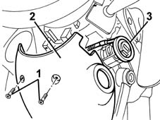
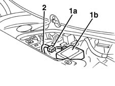

5580E08 aerial for alpha code - r r
- Path
- Procedures > 55 ELECTRICAL EQUIPMENT > 5580 SPECIAL ACCESSORIES > 5580E ANTI-THEFT DEVICE > 5580E08 aerial for alpha code - r r
- Kind
- repair procedure (removal / refitting; the operation number is the code)
- Applies to
- all engines; all production periods
- Interactive page
- https://sloeber94.github.io/elrnDB-fMltpl/en/#/2891983
Applies to: all engines; all production periods
 Removing
Removing
 Refitting
Refitting7040A37 fuse box cover - r r .
1. Undo the bolts fixing the steering column lower cover.
2. Remove the lower cover.
3. Release the aerial from the ignition lock barrel.

Applies to: all engines; all production periods
1. Disconnect the connection (1a) for the aerial from the control unit (1b).
2. Release the cable from the retaining bands and remove the aerial assembly.

Applies to: all engines; all production periods
Refitting
RemovingCheck that the aerial is not damaged.
Refit the aerial assembly.
Secure the cable using the retaining bands.
Fit the aerial on the ignition lock barrel.
Reconnect the electrical connection to the control unit.
7040A37 fuse box cover - r r .
Connect the battery.
Check the operation of the system using the Examiner or the other diagnostic equipment.